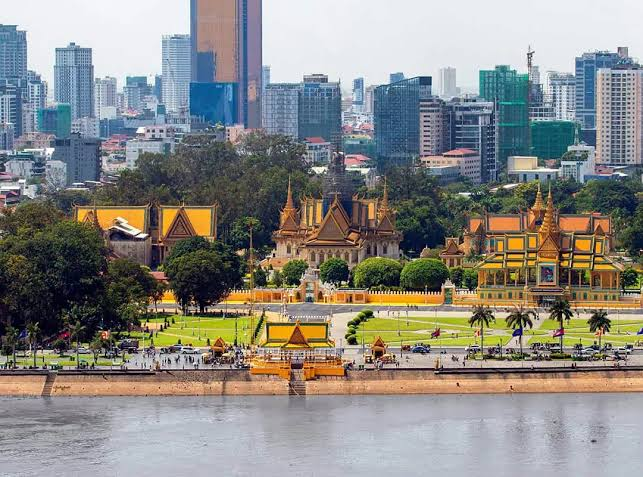
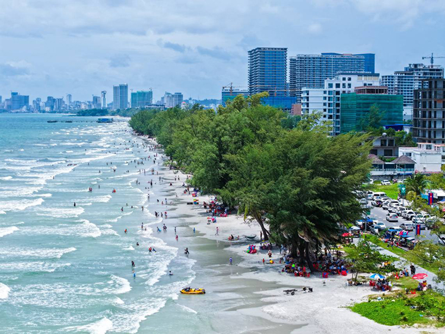
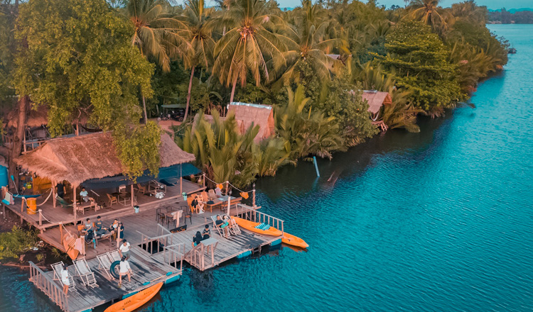

Khmer Empire
The Khmer Empire or the Mahanakorn
period was a period in which the
Kingdom of Cambodia was one of the
most powerful empires in Southeast
Asia, having grown out of the former
Kingdom of Cambodia.

Phnom Penh
Phnom Penh is the capital of the Kingdom of Cambodia, with a population of over one million
More...
Siem Reap
Siem Reap is the second largest city in Cambodia after Phnom Penh and the capital and largest city of Siem Reap Province
More...
Sihanoukville
Sihanoukville is a coastal city in Cambodia and the capital of Sihanoukville Province, at the tip of a peninsula, a plateau in the southwest
More...
Kampot
This article is about Kampot City, Kampot Province. Click here. Kampot City is the administrative center of Kampot Province.
More...